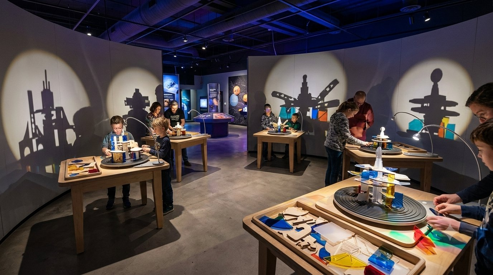
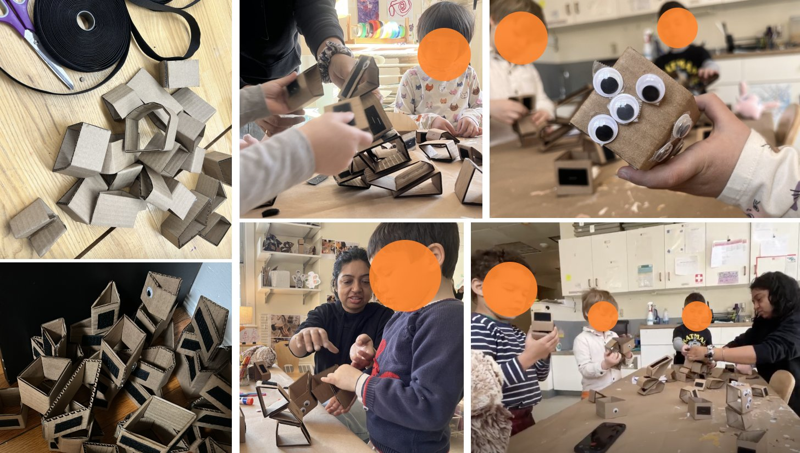
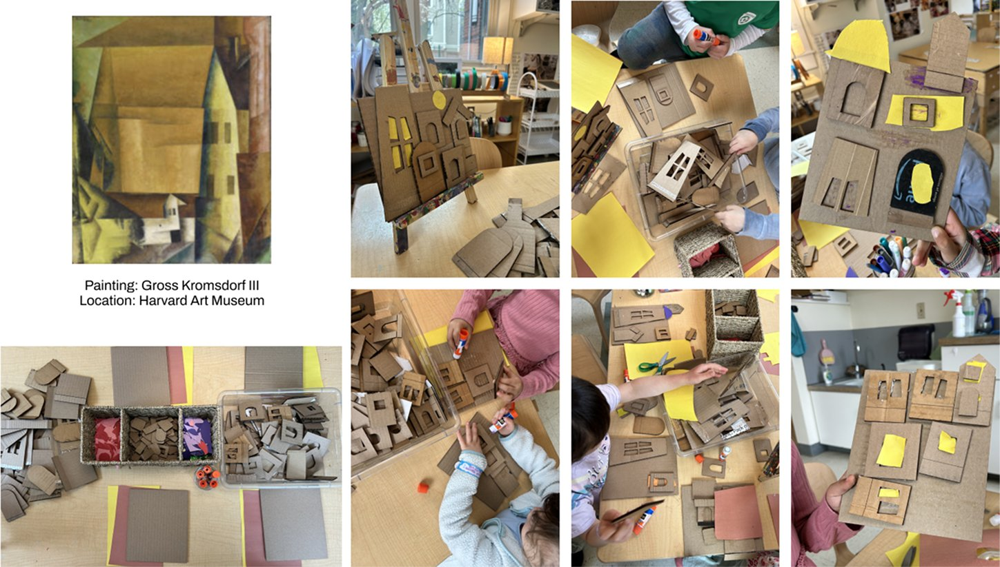
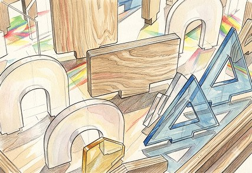
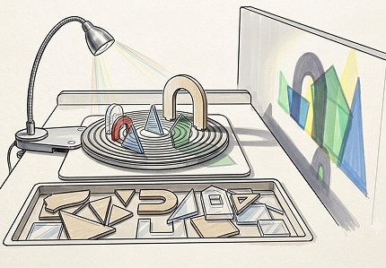
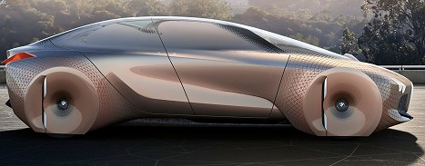
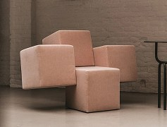
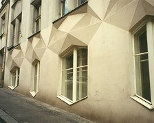

An activity designed inside a museum, so a child leaves not having seen a painting, but having tried to see it the way the artist did.

Random 3D cardboard shapes with Velcro on the sides, so kids could easily stick and unstick them. No two shapes were identical, unlike typical building blocks.
→ I was apprehensive about what they would do with such unfamiliar shapes. To my surprise, they turned them into whatever they imagined — an alien, a robot, a monster. The material suggested nothing, yet they carefully selected pieces to build the character in their mind.
This is where the core belief came from: when material is open-ended, children fill in the meaning themselves.
Phase 01
Velcro shapes, no museum involved:

After visiting the museum and seeing this Cubist painting, I brought cardboard cutouts back to class, loosely shaped around forms from the painting. Some suggested a house — a triangular roof, a window frame — but none were meant to be literal.
→ I gave them a specific prompt: build your own village. Nobody built a village. Some built houses. Some built their room.
Even with a direct prompt and shapes nudged toward "house," the children made their own reading of the material. That observation changed the question: could the museum's own collection become the open-ended material, instead of cardboard I made myself?
Phase 02

The space is part of the learning
A museum offers more than the artwork itself — its objects, scale, atmosphere, movement, and the way it asks us to look. I wanted to make some of that hidden curriculum available to children. Benjamin's idea of the "aura" of an original work helped me think about what's lost when an artwork is encountered only through a reproduction.
It's not really about Cubism
Cubism is the vehicle, not the destination. I wanted to show how a museum's existing qualities can become part of the learning experience, rather than simply delivering information about the collection.
A caveat worth stating plainly: I don't know yet whether this approach works for any object. That's untested. The claim isn't "this generalizes to everything" — it's that a small, cheap intervention like this can change how an existing collection is experienced, without needing new infrastructure built around it.
Experience over explanation
Most museum labels don't actually explain the idea behind a work — they give a name, a date, a place. Instead of adding more information to the label, I wanted children to encounter the idea physically and arrive at the question themselves.
Not beside the painting. The activity runs in an existing education or family room. Children first encounter the real artwork in the gallery, experiment with the idea in the activity space, and—if time allows—return for a second look.
Gallery
LOOK AT THE WORK
[Real painting + first impression]
Activity Room
MAKE + EXPERIMENT
[Small group table 4–6 children]
Gallery
LOOK AGAIN
[Revisit with a new lens]
Format:
Facilitated group session · 30–40 min · School visit / scheduled program
15–20 children → Multiple tables running in parallel → 4–6 children per table to keep negotiation meaningful
If only one table is available → Groups rotate: Table activity ↔ Gallery prompt
Not solved yet:
Open walk-up installation — unexplored
Mixed ages · supervision · consent · wear & tear · facilitation
AI-generated concept visualization

Asymmetrical pieces made from plywood, acrylic, and frosted translucent plastic vary in texture, opacity, and how they cast light and shadow - making every arrangement visually different.

Set into the groove of a low, child-height table and lit from the side, their arrangement becomes a live shadow composition. Move, rotate, stack, combine - every change casts a different shadow, and none is the correct one.
Move, rotate, stack, combine - every change casts a different shadow, and none is the correct one
A few photos near the exit show everyday things—buildings, furniture, packaging—using ideas seen in Cubist art. The child first sees Cubism in the gallery, experiences its ideas through the activity, and then sees those ideas beyond the museum.
The painting stays behind. The new lens goes with them.



Where It Stops on Purpose:
No correct shadow
The moment an adult says "you got it," the child stops experimenting. There is nothing to get.
Explanation comes second.
The idea comes after the child has felt the shadow change under their own hands — a bridge back to the painting, not the opening line.
Nobody experiences it alone.
Children can watch someone else's shadow change as they build — or arrive at the table and encounter a completely different outcome made from the same pieces.
What I would track next:
Comparison
Do children notice, without being prompted, that the same pieces can produce different outcomes?
Social influence
What happens when children see someone else's arrangement or outcome? Does it change what they try, notice, or make next?
Transfer
After the activity, do children return to the original painting and notice multiple viewpoints or interpretations differently?
The painting already holds the idea. The activity gives children a reason to look for it — and seeing what others notice reminds them that the same thing can be seen differently.